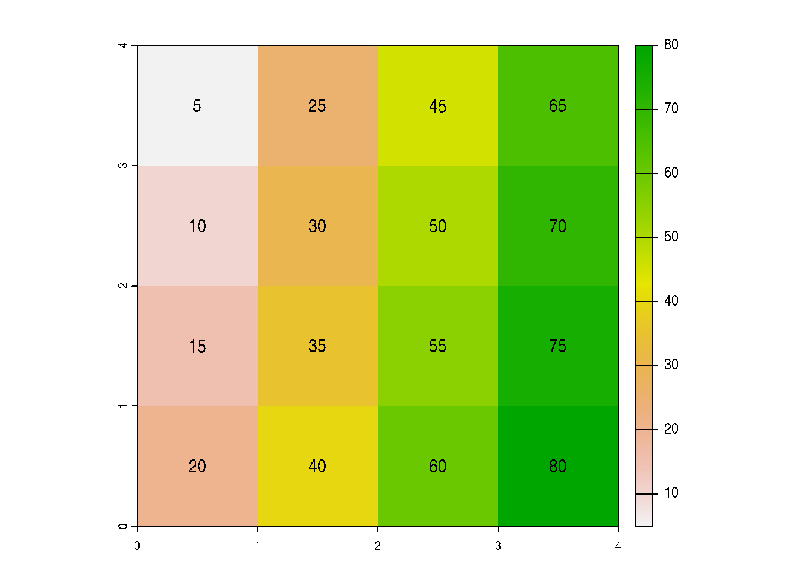
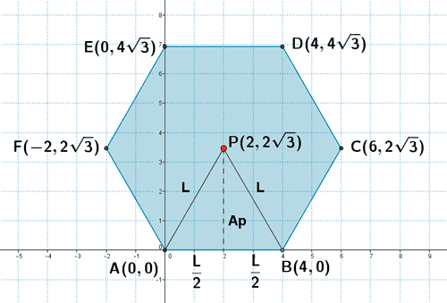
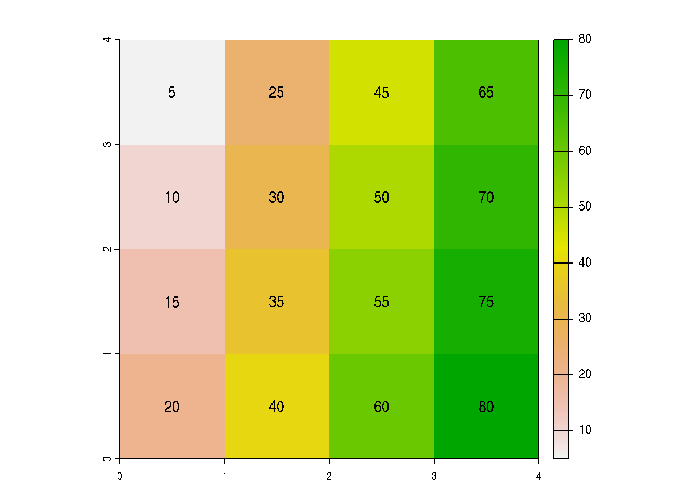

library(terra)
r <- rast(x=matrix(1:16*5,4,byrow = FALSE),crs="EPSG:4326")
plot(r);text(r)
SIG Avanzado (IMSE1017)
Los datos que utilizará para la evaluación son los siguientes:
Indice Calidad de Aguas: datos de la Dirección General de Aguas (DGA) con ubicaciones de puntos de Agua Potable Rural (APR) con mediciones de índices de calidad de agua.Inventario Lagos: datos de la Dirección General de Aguas (DGA) con los lagos presentes en el territorio nacional.dem Chile: datos de elevación (metros) para el territorio de Chile continental.imagen Copiapo: imagen aérea capturada sobre una zona de la ciudad de Copiapo.Los datos los debe descargar desde acá
(10pts) Describa como puede utilizar el software R como un Sistema de Información Geográfica.
(10pts) Describa que clase de objetos se utilizan en R para trabajar con objetos geoespaciales de tipo vectoriales y rasters.
(10pts) Liste los tipos de geometrias que se pueden trabajar con el paquete {sf}.
(10pts) Describa los objetos de clase sf.

Inventario Lagos e indique lo siguiente :
Inventario Lagos realice lo siguiente:
lagos_stgo. ¿Cuántos son?lagos_stgo a SRC EPSG 4326 y reemplázelo.lagos_stgo y simplifique su geometria, considerando una tolerancia de 30m. Haga un plot de la geometría original y simplificada.Indice Calidad Aguas y realice lo siguiente:
calag_rom_buf.calag_rom_buf.calag_rom_buf en formato geopackage y con el nombre calidad_agua_romeral_buffer_1000m-Fila 1: 9, 6, 4, 1
-Fila 2: 10, 25, NA, 2
-Fila 3: 5, 10, 15, 25
-Fila 4: 100, 5, 30, 50
library(terra)
r <- rast(x=matrix(1:16*5,4,byrow = FALSE),crs="EPSG:4326")
plot(r);text(r)
Transforme el sistema de referencia de coordenadas del raster anterior a coordenadas UTM Huso 19 Sur datum WGS84.
\[\sqrt{pixel+10}\]
(20pts) Cree un nuevo raster, tomando como referencia el raster de la pregunta 2, al que se le cambie los valores que son menores que 46 y mayores que 54, por el valor NA.
(20pts) Calcule el promedio, la mediana y desviación estandar de todos los valores del raster de la pregunta 2. Utilice una función de {terra}.
Cargue el archivo dem_chile.tif en R e indique utilizando una función de R:
imagen_copiapo.tif en R. Realice lo siguiente:
writeRaster) la primera capa del raster con el nombre copiapo_capa1.tif